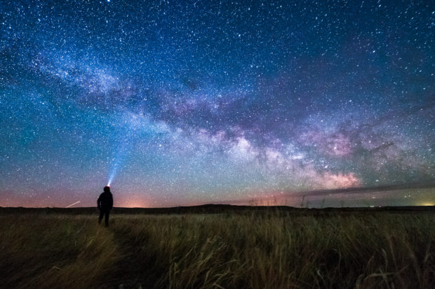

Experiment 2 - Living Impressions
Description
I am trying to replicate this image right here I also added in the stars moving to replicate it in real life:
Technical
So for this experiment I wanted to create something alike the living impression in the slide but instead of the milky way. I used ellipse to create the stars and persons head. I also copied the code from the example for the mountains since I am using the mountains. I also added in where the stars start to move on its own. To replicate real life. I used functions to draw each thing such as the stars, person, and the grass.
Reflection
Now that I finished this experiment, I am learning how to navigate through the file for this page. I am learning how to use p5.js. I went through a lot of error on this one. Since I was trying to replicate the milky way. I learned from youtube videos and searching through guides to get through the errors. I wasnt able to add in the flashlight in the picture I wasnt able to figure out how to do it.